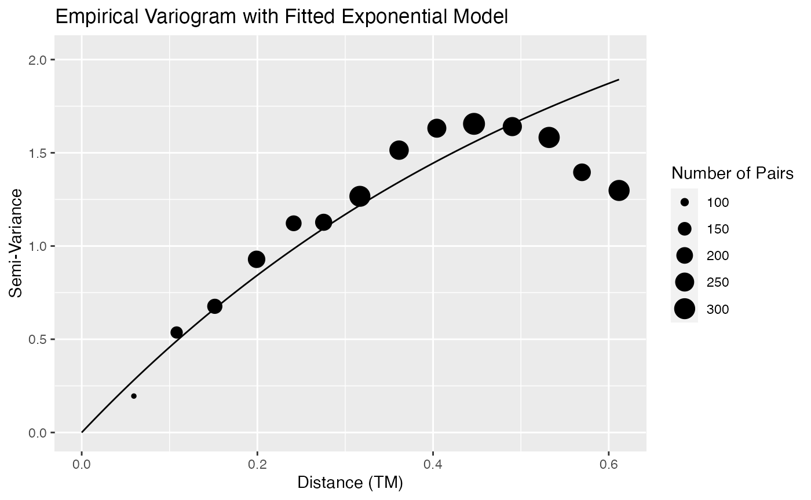

Inference for Totals and Weighted Sums from Finite Spatial Populations
Matt Higham, Jay M. Ver Hoef, Bryce M. Frank
2021-05-11
Source:vignettes/sptotal-vignette.Rmd
sptotal-vignette.RmdIntroduction
The sptotal package was developed for predicting a weighted sum, most commonly a mean or total, from a finite number of sample units in a fixed geographic area. Estimating totals and means from a finite population is an important goal for both academic research and management of environmental data. One naturally turns to classical sampling methods, such as simple random sampling or stratified random sampling. Classical sampling methods depend on probability-based sample designs and are robust. Very few assumptions are required because the probability distribution for inference comes from the sample design, which is known and under our control. For design-based methods, sample plots are chosen at random, they are measured or counted, and inference is obtained from the probability of sampling those units randomly based on the design (e.g., Horwitz-Thompson estimation). As an alternative, we will use model-based methods, specifically geostatistics, to accomplish the same goals. Geostatistics does not rely on a specific sampling design. Instead, when using geostatistics, we assume the data were produced by a stochastic process with parameters that can be estimated. The relevant theory is given by Ver Hoef (2008). The sptotal package puts much of the code and plots in Ver Hoef (2008) in easily accessible, convenient functions.
In the sptotal package, our goal is to estimate some linear function of all of the sample units, call it \(\tau(\mathbf{z}) = \mathbf{b}^\prime \mathbf{z}\), where \(\mathbf{z}\) is a vector of the realized values for all the sample units and \(\mathbf{b}\) is a vector of weights. By “realized,” we mean that whatever processes produced the data have already happened, and that, if we had enough resources, we could measure them all, obtaining a complete census. If \(\tau(\mathbf{z})\) is a population total, then every element of \(\mathbf{b}\) contains a \(1\). Generally, \(\mathbf{b}\) can contain any set of weights that we would like to multiply times each value in a population, and then these are summed, yielding a weighted sum.
The vector \(\mathbf{b}\) contains the weights that we would apply if we could measure or count every observation, but, because of cost consideration, we usually only have a sample.
Data
Prior to using the sptotal package, the data needs to be in R in the proper format. For this package, we assume that your data set is a data.frame() object, described below.
Data Frame Structure
Data input for the sptotal package is a data.frame. The basic information required to fit a spatial linear model, and make predictions, are the response variable, covariates, the x- and y-coordinates, and a column of weights. You can envision your whole population of possible samples as a data.frame organized as follows,

where the red rectangle represents the column of the response variable, and the top part, colored in red, are observed locations, and the lower part, colored in white, are the unobserved values. To the right, colored in blue, are possibly several columns containing covariates thought to be predictive for the response value at each location. Covariates must be known for both observed and unobserved locations, and the covariates for unobserved locations are shown as pale blue below the darker blue covariates for observed locations above. It is also possible that there are no available covariates.
The data.frame must have x- and y-coordinates, and they are shown as two columns colored in green, with the coordinates for the unobserved locations shown as pale green below the darker green coordinates for the observed locations above. The data.frame can have a column of weights. If one is not provided, we assume a column of all ones so that the prediction is for the population total. The column of weights is purple, with weights for the observed locations a darker shade, above the lighter shade of purple representing weights for unsampled locations. Finally, the data.frame may contain columns that are not relevant to predicting the weighted sum. These columns are represented by the orange color, with the sampled locations a darker shade, above the unsampled locations with the ligher shade.
Of course, the data do not have to be in exactly this order, either in terms of rows or columns. Sampled and unsampled rows can be intermingled, and columns of response variable, covariates, coordinates, and weights can be also be intermingled. The figure above is an idealized graphic of the data. However, this figure helps envision how the data are used and illustrate the goal. We desire a weighted sum, where the weights (in the purple column) are multiplied with the response variable (red/white) column, and then summed. Because some of the response values are unknown (the white values in the response column), covariates and spatial information (obtained from the x- and y-coordinates) are used to predict the unobserved (white) values. The weights (purple) are then applied to both the observed response values (red), and the predicted response values (white), to obtain a weighted sum. Because we use predictions for unobserved response values, it is important to assess our uncertainty, and the software provides both an estimate of the weighted sum, mean, or total for the response variable as well as its estimated prediction variance.
Simulated Data Creation
To demonstrate the package, we created some simulated data so they are perfectly behaved, and we know exactly how they were produced. Here, we give a brief description before using the main features of the package. To get started, install the package
install.packages("sptotal")and then type
Type
data(simdata)and then simdata will be available in your workspace. To see the structure of simdata, type
head(simdata)
#> x y X1 X2 X3 X4 X5
#> 1 0.025 0.975 -0.8460525 0.11866907 -0.2123901 0.38430607 0.08154129
#> 2 0.025 0.925 -0.6583116 -0.07686491 -0.9001410 -1.24774376 1.46631630
#> 3 0.025 0.875 0.2222961 -0.22803942 0.2820468 0.20560677 0.48713665
#> 4 0.025 0.825 -0.5433925 0.56894993 -0.9839629 -0.04950434 -0.78195604
#> 5 0.025 0.775 -0.7550155 -0.72592167 -0.4217208 0.26767033 0.40493269
#> 6 0.025 0.725 -0.1786784 0.33452155 -1.2134533 2.18704575 -0.54903128
#> X6 X7 F1 F2 Z wts1 wts2
#> 1 1.0747592 -0.0252824 3 3 15.94380 0.0025 0
#> 2 0.1299263 1.4651052 2 5 15.04616 0.0025 0
#> 3 -0.2537515 0.2682010 2 3 14.52765 0.0025 0
#> 4 -0.3259937 0.7858140 2 5 12.13401 0.0025 0
#> 5 -1.2284475 1.2944342 2 2 11.75260 0.0025 0
#> 6 -1.0366099 0.7938890 1 4 11.58142 0.0025 0Here, we see that simdata is a data frame with 400 records. The spatial coordinates are numeric variables in columns named x and y. We created 7 continuous covariates, X1 through X7. The variables X1 through X5 were all created using the rnorm() function, so they are all standard normal variates that are independent between and within variable. Variables X6 and X7 were independent from each other, but spatially autocorrelated within, each with a variance parameter of 1, an autocorrelation range parameter of 0.2 from an exponential model, and a small nugget effect of 0.01. The variables F1 and F2 are factor variables with 3 and 5 levels, respectively. The variable Z is the response. Data were simulated from the model
\[\begin{align*} Z_i = 10 & + 0 \cdot X1_i + 0.1 \cdot X2_i + 0.2 \cdot X3_i + 0.3 \cdot X4_i + \\ & 0.4 \cdot X5_i + 0.4 \cdot X6_i + 0.1 \cdot X7_i + F1_i + F2_i + \delta_i + \varepsilon_i \end{align*}\]
where factor levels for F1 have effects \(0, 0.4, 0.8\), and factor levels for F2 have effects \(0, 0.1, 0.2, 0.3, 0.4\). The random errors \(\{\delta_i\}\) are spatially autocorrelated from an exponential model,
\[ \textrm{cov}(\delta_i,\delta_j) = 2*\exp(-d_{i,j}) \]
where \(d_{i,j}\) is Euclidean distance between locations \(i\) and \(j\). In geostatistics terminology, this model has a partial sill of 2 and a range of 1. The random errors \(\{\varepsilon_i\}\) are independent with variance 0.02, and this variance is called the nugget effect. Two columns with weights are included, wts1 contains 1/400 for each row, so the weighted sum will yield a prediction of the overall mean. The column wts2 contains a 1 for 25 locations, and 0 elsewhere, so the weighted sum will be a prediction of a total in the subset of 25 locations.
The spatial locations of simdata are in a \(20 \times 20\) grid uniformly spaced in a box with sides of length 1,
require(ggplot2)
ggplot(data = simdata, aes(x = x, y = y)) + geom_point(size = 3) +
geom_point(data = subset(simdata, wts2 == 1), colour = "red",
size = 3)
The locations of the 25 sites where wts2 is equal to one are shown in red.
We have simulated the data for the whole population. This is convenient, because we know the true means and totals. In order to compare with the prediction from the sptotal package, let’s find the true population total
sum(simdata[ ,'Z'])
#> [1] 4834.326as well as the total in the subset of 25 sites
sum(simdata[ ,'wts2'] * simdata[ ,'Z'])
#> [1] 273.3751However, we will now sample from this population to provide a more realistic setting where we can measure only a part of the whole population. In order to make results reproducible, we use the set.seed command, along with sample. The code below will replace some of the response values with NA to represent the unsampled sites.
set.seed(1)
# take a random sample of 100
obsID <- sample(1:nrow(simdata), 100)
simobs <- simdata
simobs$Z <- NA
simobs[obsID, 'Z'] <- simdata[obsID, 'Z']We now have a data set where the whole population is known, simdata, and another one, simobs, where 75% of the response variable of the population has been replaced by NA. Next we show the sampled sites as solid circles, while the missing values are shown as open circles, and we use red again to show the sites within the small area of 25 locations.
ggplot(data = simobs, aes(x = x, y = y)) +
geom_point(shape = 1, size = 2.5, stroke = 1.5) +
geom_point(data = subset(simobs, !is.na(Z)), shape = 16, size = 3.5) +
geom_point(data = subset(simobs, !is.na(Z) & wts2 == 1), shape = 16,
colour = "red", size = 3.5) +
geom_point(data = subset(simobs, is.na(Z) & wts2 == 1), shape = 1,
colour = "red", size = 2.5, stroke = 1.5)
We will use the simobs data to illustrate use of the sptotal package.
Using the sptotal Package
After your data is in a similar format to simobs, using the sptotal package occurs in two primary stages. In the first, we fit a spatial linear model. This stage estimates spatial regression coefficients and spatial autocorrelation parameters. In the second stage, we predict the unsampled locations for the response value, and create a prediction for the weighted sum (e.g. the total) of all response variable values, both observed and predicted. To show how the package works, we demonstrate on ideal, simulated data. Then, we give a realistic example on moose data and a second example on lakes data to provide further insight and documentation. The moose example also has a section on data preparation steps.
Fitting a Spatial Linear Model: slmfit
We continue with our use of the simulated data, simobs, to illustrate fitting the spatial linear model. The spatial model-fitting function is slmfit (spatial-linear-model-fit), which uses a formula like many other model-fitting functions in R (e.g., the lm() function). To fit a basic spatial linear model we use
slmfit_out1 <- slmfit(formula = Z ~ X1 + X2 + X3 + X4 + X5 + X6 + X7 + F1 + F2,
data = simobs, xcoordcol = 'x', ycoordcol = 'y',
CorModel = "Exponential")The documentation describes the arguments in more detail, but as mentioned earlier, the linear model includes a formula argument, and the data.frame that is being used as a data set. We also need to include which columns contain the \(x\)- and \(y\)-coordinates, which are arguments to xcoordcol and ycoordcol, respectively. In the above example, we specify 'x' and 'y' as the column coordinates arguments since the names of the coordinate columns in our simulated data set are 'x' and 'y'. We also need to specify a spatial autocorrelation model, which is given by the CorModel argument. As with many other linear model fits, we can obtain a summary of the model fit,
summary(slmfit_out1)
#>
#> Call:
#> Z ~ X1 + X2 + X3 + X4 + X5 + X6 + X7 + F1 + F2
#>
#> Residuals:
#> Min 1Q Median 3Q Max
#> -1.9390 -0.6271 0.3338 1.2520 2.8137
#>
#> Coefficients:
#> Estimate Std. Error t value Pr(>|t|)
#> (Intercept) 11.36965 0.60622 18.755 < 2e-16 ***
#> X1 -0.05596 0.03739 -1.497 0.13812
#> X2 0.02661 0.03859 0.689 0.49241
#> X3 0.18292 0.03779 4.841 1e-05 ***
#> X4 0.26487 0.03354 7.897 < 2e-16 ***
#> X5 0.38434 0.03518 10.925 < 2e-16 ***
#> X6 0.47612 0.06542 7.278 < 2e-16 ***
#> X7 0.02893 0.06870 0.421 0.67470
#> F12 0.29596 0.08852 3.343 0.00123 **
#> F13 0.70853 0.07674 9.233 < 2e-16 ***
#> F22 0.15384 0.09974 1.542 0.12664
#> F23 0.19804 0.10415 1.902 0.06057 .
#> F24 0.25492 0.11697 2.179 0.03204 *
#> F25 0.39748 0.13840 2.872 0.00513 **
#> ---
#> Signif. codes: 0 '***' 0.001 '**' 0.01 '*' 0.05 '.' 0.1 ' ' 1
#>
#> Covariance Parameters:
#> Exponential Model
#> Nugget 1.009265e-06
#> Partial Sill 2.930385e+00
#> Range 5.891474e-01
#>
#> Generalized R-squared: 0.5996812The output looks similar to the summary of a standard lm object, but there is some extra output at the end that gives our fitted covariance parameters.
Prediction: predict
After we have obtained a fitted spatial linear model, we can use the predict.slmfit() function to construct a data frame of predictions for the unsampled sites. By default, the predict() function assumes that we are predicting the population total and outputs this predicted total, the prediction variance for the total, as well as the original data frame input into slmfit appended with site-by-site predictions and site-by-site prediction variances. We name this object pred_obj in the chunk below.
pred_obj <- predict(slmfit_out1)The output of the predict function is too lengthy to print here and can be cumbersome to read. To obtain useful output, we have a couple of choices. If you are familiar with R, then you might want to construct your own summary output, maps, variograms, etc. One of the outputs of predict is a data frame that is appended with the site by site predictions that would facilitate construction of, for example, a map with predictions. This is particularly useful if you have a shapefile. The site-by-site predictions for density are given by the variable name_of_response_pred_density while the site-by-site predictions for counts are given by name_of_response_pred_count. These two columns will only differ if you have provided a column for areas of each site.
prediction_df <- pred_obj$Pred_df
prediction_df[ ,c("x", "y", "Z", "Z_pred_density")]
Examining results: check.variogram, get.predinfo, and get.predplot
Alternatively, you could take advantage of some pre-specified package output functions check.variogram, get.predinfo, and get.predplot.
First, check.variogram constructs an empirical variogram of the model residuals and overlays the REML-fitted variogram model with a line:
plot(slmfit_out1)
Note that the fitted line may not appear to fit the empirical variogram perfectly for a couple of reasons. First, only pairs of points that have a distance between 0 and one-half the maximum distance are shown. Second, the fitted model is estimated using REML, which may give different results than using weighted least squares.
We can also examine a histogram of the residuals as well as a histogram of the cross-validation (leave-one-out) residuals:
There is still one somewhat large cross-validation residual for an observed count that is larger than what would be predicted from a model without that particular count. The cause of this somewhat large residual can be attributed to random chance because we know that the data was simulated to follow all assumptions.
If we are satisfied with the fit of the variogram, we can examine our prediction and obtain a confidence interval for this prediction using get.predinfo. While the check.variogram function takes the fitted spatial linear model as input, the get.predinfo function uses the object from the predict function, which we previously named pred_obj.
get.predinfo(pred_obj, conf_level = 0.90)
#> $Prediction
#> Prediction SE(Prediction)
#> [1,] 4817.229 23.27812
#>
#> $`90% Confidence_Interval`
#> Lower Bound Upper Bound
#> [1,] 4778.94 4855.518
#>
#> $Sampling_Information
#> Numb. Sites Sampled Total Numb. Sites Total Observed Average Density
#> [1,] 100 400 1220.009 12.20009We predict a total of 4817 units in this simulated region with 90% confidence bounds of (4779, 4856). The confidence interval is fairly small because we simulated data that were highly correlated, increasing precision in prediction for unobserved sites. You can see that the prediction of the total is close to the true value of 4834.326, and the true value is within the confidence interval.
Finally, to get a basic plot of the predictions, we can use the get.predplot function.
get.predplot(pred_obj)The map shows the distribution of the response across sampled and unsampled sites. Its purpose is simply to give the user a quick idea of the distribution of the response. For example, we see from the plot that the predicted response is low in the upper-right region of the graph, is high in the middle of the region and in the upper-left corner of the region, and is low again at the lower portion of the area of interest. However, using the prediction data frame generated from the predict function, you can use ggplot2 or any other plotting package to construct your own map that may be more useful in your context.
###Prediction for a Small Area of Interest
Spatial prediction can be used to estimate means and totals over finite populations from geographic regions, but can also be used for the special case of estimating a mean or total in a small area of interest. The term small area estimation refers to making an inference on a smaller geographic area within the overall study area. There may be few or no samples within that small area, so that estimation by classical sampling methods may not be possible or variances become exceedingly large.
If we want to predict a quantity other than the population total, then we need to specify the column in our data set that has the appropriate prediction weights in a wtscol argument. For example, we might want to predict the total for a small area of interest. if we want to predict the total for the 25 sites in coloured in red, then we can use
pred_obj2 <- predict(slmfit_out1, wtscol = "wts2")
get.predinfo(pred_obj2)
#> $Prediction
#> Prediction SE(Prediction)
#> [1,] 282.1914 7.342028
#>
#> $`90% Confidence_Interval`
#> Lower Bound Upper Bound
#> [1,] 270.1149 294.268
#>
#> $Sampling_Information
#> Numb. Sites Sampled Total Numb. Sites Total Observed Average Density
#> [1,] 100 400 1220.009 12.20009Recall that the true total for this small area was 273.4. We see that this is close to our prediction of 282.2 and is also within the bounds of our confidence interval.
Real Data Examples
Moose Abundance from Aerial Surveys
The simulated data example assumes that the coordinates are a Transverse Mercator projection (TM), that the vector of the response is numeric and has NA values for sites that were not sampled, and that the areas of each site sampled are all the same. If this isn’t the case for the data set you are working with, the following moose abundance example can help prepare your data for the functions in sptotal.
For an example with real data, we consider a data set on moose abundance in Alaska obtained from Alaska Department of Fish and Game, Division of Wildlife Conservation. Each observation corresponds to a moose counted at a particular site, but operational constraints do not permit all sites to be counted. Begin by loading the data into R. Unlike the simulated data, AKmoose is an sp object. In order to use the functions in this package, we need to extract the coordinates and relevant data from the sp object and put this information into a rectangular data frame. The easy part is getting the data; the more difficult part is getting the coordinates into a usable form.
Spatial Coordinates
Our goal is to append the x and y-coordinates to the data frame with the survey data.
data(AKmoose)We want to get the centroids of each of the sites and combine the centroids with the survey data. To obtain centroids, we use the rgeos package.
require(rgeos)
centroids <- data.frame(ID = AKmoose@data,
x = rgeos::gCentroid(AKmoose, byid=TRUE)@coords[ ,'x'],
y = rgeos::gCentroid(AKmoose, byid=TRUE)@coords[ ,'y'])Next, for most spatial prediction, we want to use a transverse Mercator projection instead of latitude-longitude so that physical distance between two sites is accurately represented. The LLtoTM() function in this package provides a convenient way to convert latitude/longitude coordinates into user-defined transverse Mercator coordinates.
Transverse Mercator is based on minimizing distortion from a central meridian: the first argument specifies that the central meridian should be the mean longitude value in the data set. The second and third arguments to this function give the centroid latitude values and centroid longitude values. Finally, we add the transformed coordinates to our data frame with the survey data. We first extract the survey data from our sp object using
moose_df <- AKmoose@data ## name the data set moose_df
head(moose_df) ## look at the first 6 observations
#> elev_mean strat surveyed census_area total
#> 0 560.3333 L 0 0 0
#> 1 620.4167 L 0 0 0
#> 2 468.9167 L 1 0 0
#> 3 492.7500 L 0 0 0
#> 4 379.5833 L 0 0 0
#> 5 463.7500 L 0 0 0We see that, in addition to the total column, which has counts of moose, the data set also has strat, a covariate that is either L for Low or M for medium, and surveyed, which is a 0 if the site wasn’t sampled and a 1 if the site was sampled.
And then the tranformed coordinates can be added to the survey data frame.
moose_df$x = xy[ ,'x']
moose_df$y = xy[ ,'y']It might be helpful to compare the latitude and longitude coordinates of the original data frame to the tranformed coordinates in the new data frame to make sure that the transformation seems reasonable:
cbind(moose_df$x, moose_df$y, centroids$x, centroids$y)Now, the moose_df data frame is in a more workable form for the sptotal package. However, there are still a couple of issues involving how the count data is stored and which sites were sampled that may be somewhat common in real data sets, which we address next.
Count Vector Specifications
Let’s look specifically at the counts in this moose data set in the total column:
head(moose_df)
#> elev_mean strat surveyed census_area total x y
#> 0 560.3333 L 0 0 0 38.98385 130.1806
#> 1 620.4167 L 0 0 0 34.86653 130.2284
#> 2 468.9167 L 1 0 0 30.74963 130.2815
#> 3 492.7500 L 0 0 0 26.63242 130.3400
#> 4 379.5833 L 0 0 0 22.51526 130.4038
#> 5 463.7500 L 0 0 0 38.94319 126.4665
str(moose_df$total)
#> Factor w/ 23 levels "0","1","10","11",..: 1 1 1 1 1 1 1 1 1 1 ...The first issue is that our original sp object had total as a factor, which R treats as a categorical variable. total should be numeric, and, in fact, the variable surveyed has the same issue. If we were to keep total as a factor and try to run slmfit, we would get a convenient error message, reminding us to make sure that our response variable is numeric, not a factor or character:
slmfit_out_moose <- slmfit(formula = total ~ strat,
data = moose_df, xcoordcol = 'x', ycoordcol = 'y',
CorModel = "Exponential")
#> Warning in stats::model.response(fullmf, "numeric"): using type = "numeric" with
#> a factor response will be ignored
#> Warning in Ops.factor(yvar, areavar): '/' not meaningful for factors
#> Error in slmfit(formula = total ~ strat, data = moose_df, xcoordcol = "x", : Check to make sure response variable is numeric, not a factor or character.We first want to convert these two columns into numeric variables instead of factors. There are packages that can help with this conversion, like dplyr and forcats, but we opt for base R functions here.
moose_df$surveyed <- as.numeric(levels(moose_df$surveyed))[moose_df$surveyed]
moose_df$total <- as.numeric(levels(moose_df$total))[moose_df$total]This may not be an issue with the data frame you are working with, in which case you can ignore the above code. The str() command will tell you whether your variables are coded as factors or numeric.
After conversion to numeric variables, note that the first 6 observations for the total variable are all 0, but, the first two sites and the fourth, fifth, and sixth sites weren’t actually sampled. Without some modification to this variable, sptotal wouldn’t be able to differentiate between zeroes that were zero due to a site really having 0 counts or 0 density at the site and zeroes that were zero due to the site not being sampled. The following code converts the total variable on sites that were not surveyed (surveyed = 0) to NA.
moose_df$total[moose_df$surveyed == 0] <- NA
head(moose_df)
#> elev_mean strat surveyed census_area total x y
#> 0 560.3333 L 0 0 NA 38.98385 130.1806
#> 1 620.4167 L 0 0 NA 34.86653 130.2284
#> 2 468.9167 L 1 0 0 30.74963 130.2815
#> 3 492.7500 L 0 0 NA 26.63242 130.3400
#> 4 379.5833 L 0 0 NA 22.51526 130.4038
#> 5 463.7500 L 0 0 NA 38.94319 126.4665Fitting the Model and Obtaining Predictions
Now that
we have x and y coordinates in TM format,
our response variable is numeric and not a factor, and
the column with our counts has
NAvalues for sites that were not surveyed,
we can proceed to use the functions in sptotal in a similar way to how the functions were used for the simulated data. To get a sense of the data, we first give a plot of the raw observed counts:
ggplot(data = moose_df, aes(x = x, y = y)) +
geom_point(aes(colour = total), size = 4) +
scale_colour_viridis_c() +
theme_bw()
where the grey circles are sites that have not been sampled.
slmfit_out_moose <- slmfit(formula = total ~ strat,
data = moose_df, xcoordcol = 'x', ycoordcol = 'y',
CorModel = "Exponential")
summary(slmfit_out_moose)
plot(slmfit_out_moose)
qplot(residuals(slmfit_out_moose), bins = 20) + xlab("Residuals")
qplot(residuals(slmfit_out_moose, cross.validation = TRUE), bins = 20) +
xlab("CV Residuals")
pred_moose <- predict(slmfit_out_moose)
get.predinfo(pred_moose)
get.predplot(pred_moose)We obtain a predicted total of 1596 animals with 90% lower and upper confidence bounds of 921 and 2271 animals, respectively. Unlike the simulation setting, there is no “true total” we can compare our prediction to, because, in reality, not all sites were sampled!
Sites with Different Areas
Finally, throughout all of the above analyses, we have assumed that the areas of each site were equal. Though this assumption is not accurate for the moose data, due to slightly differing areas based on differing latitudes and longitudes, the assumption approximately holds so that any differences in the prediction that incorporates area is negligible. But, suppose we had sites with very different areas. To showcase how to incorporate site area into the functions in this package, let’s first create a “fake” area variable that has the first 700 sites in the region have an area of 1 square kilometer and has the last 160 sites in the region have an area of 2 square kilometeres.
For a spatial model, it makes much more sense to use density as the response variable instead of raw counts if the areas of the sites in the model are drastically different. By supplying an areacol argument to slmfit, the function converts counts to densities, and then gives regression parameters and covariance parameters for the density.
slmfit_out_moose_area <- slmfit(formula = total ~ strat,
data = moose_df, xcoordcol = 'x', ycoordcol = 'y',
CorModel = "Exponential", areacol = 'fake_area')
summary(slmfit_out_moose_area)
#>
#> Call:
#> total ~ strat
#>
#> Residuals:
#> Min 1Q Median 3Q Max
#> -3.3072 -3.3072 -1.0906 0.9094 36.6928
#>
#> Coefficients:
#> Estimate Std. Error t value Pr(>|t|)
#> (Intercept) 1.0906 0.1832 5.953 <2e-16 ***
#> stratM 2.2166 0.1396 15.875 <2e-16 ***
#> ---
#> Signif. codes: 0 '***' 0.001 '**' 0.01 '*' 0.05 '.' 0.1 ' ' 1
#>
#> Covariance Parameters:
#> Exponential Model
#> Nugget 20.711292
#> Partial Sill 4.166747
#> Range 23.645337
#>
#> Generalized R-squared: 0.04479698The predict function then keeps track of the areacol argument and gives output in the data frame that pertains to both counts and densities:
pred_obj_area <- predict(slmfit_out_moose_area)
head(pred_obj_area$Pred_df[ ,c("total_pred_density", "total_pred_count",
"fake_area")])
#> total_pred_density total_pred_count fake_area
#> 0 0.4029168 0.4029168 1
#> 1 0.3505312 0.3505312 1
#> 2 0.0000000 0.0000000 1
#> 3 0.2841390 0.2841390 1
#> 4 0.2782489 0.2782489 1
#> 5 0.3290719 0.3290719 1
tail(pred_obj_area$Pred_df[ ,c("total_pred_density", "total_pred_count",
"fake_area")])
#> total_pred_density total_pred_count fake_area
#> 854 2.00000000 4.00000000 2
#> 855 0.01496504 0.02993008 2
#> 856 0.02163868 0.04327737 2
#> 857 0.06967022 0.13934044 2
#> 858 0.00000000 0.00000000 2
#> 859 0.49928987 0.99857974 2Note that, for the first 6 observations, which have an area of 1, the total_pred_density and total_pred_count columns are identical, while, for the last 6 observations, which have an area of 2, the total_pred_density column is half that of the total_pred_count column.
The get.predinfo function assumes that we are interested in predicting the total count since we did not specify a column of weights so our prediction for the number of moose in this fake region is 1556 moose with a standard error of 393.62.
get.predinfo(pred_obj_area)
#> $Prediction
#> Prediction SE(Prediction)
#> [1,] 1556.465 393.6176
#>
#> $`90% Confidence_Interval`
#> Lower Bound Upper Bound
#> [1,] 909.0213 2203.908
#>
#> $Sampling_Information
#> Numb. Sites Sampled Total Numb. Sites Total Observed Average Density
#> [1,] 218 860 742 2.883028If sites have differing areas, the get.predplot function doesn’t make much sense to use because each site is represented by the same-sized dot. Here, it would be helpful to import the data frame with the predicted counts and densities into a shapefile so that you are able to construct your own graphics that reflect the different-sized sites.
Mean Dissolved Organic Carbon from National Lakes Data
As another example, we took data from the National Aquatic Resource Surveys. With concerns about global warming, the earth’s capacity to store carbon is of great interest, and dissolved organic carbon (DOC) is an estimate of a lake’s ability to store carbon. We will estimate the mean mg/L for DOC from a sample of lakes. If the total lake volume could be calculated (we will not attempt that), then the total dissolved carbon in a population of lakes could be estimated. We will examine DOC in lakes from the 2012 surveys. We combined site data, DOC data, and habitat metrics to create a data set of 1206 lakes in the conterminous United States.
To access the data, type
data(USlakes)and to get a feeling for the data, create a histogram
ggplot(data = USlakes, aes(x = log(DOC_RESULT))) + geom_histogram(bins = 20)Even on the log scale, there appears to be some outliers with very high values, and these may be the result of errors in collection or lab analysis. We will eliminate lakes that have log(DOC) values \(>\) 5.
lakes <- USlakes[log(USlakes$DOC_RESULT) < 5, ]Our new data set has dimensions
nrow(lakes)
#> [1] 1204sites, so we have eliminated 2 sites. To visualize our data some more, we make a bubble plot,
plot(USlakes$XCOORD, USlakes$YCOORD, pch = 19,
cex = 2 * log(lakes$DOC_RESULT) / max(log(lakes$DOC_RESULT)))and it appears that there is spatial patterning.
We also have covariates that may help in prediction:
-
ELEVATION: Elevation at lake coordinates (LAT_DD_N83, LON_DD_N83) from NHD Digital Elevation Map layer -
RVFPUNDWOODY_RIP: riparian zone and vegetation: fraction of understory with nonwoody cover present in the riparian zone -
FCIBIG_LIT: Fish cover: index of fish cover due to large structures in the littoral zone -
RVFCGNDBARE_RIP: riparian zone and vegetation: fraction of ground lacking cover in the riparian zone -
RVFCGNDWOODY_RIP: riparian zone and vegetation: fraction of ground cover by woody vegetation in the riparian zone
It is always important to make scatterplots of your variables to look for obvious relationships.
ggplot(data = lakes, aes(x = RVFPUNDWOODY_RIP, y = log(DOC_RESULT))) +
geom_jitter(width = 0.02)It looks like there might be a negative relationship between riparian nonwoody-understory cover and DOC.
Creating a Subsample Data Set
We have the whole population of lakes, but, with budget cuts, it is likely that this whole population will not always be surveyed in its entirety. So, we will ask the question, “If we sample from this population, can we still get a fairly precise estimate of the mean DOC?”
We will do the same thing that we did with the simulated data, and take a random sample of 500 lakes. Also, because we want the mean, and not a total, we will create a weights column for the lakeobs data set, with each element \(1/N\), where, here, \(N = 1204\).
Fitting the Model and Making Predictions
Even though data are skewed, let’s try it without taking log of response variable. Note that the mean of log-tranformed variables is not equal to the log of the mean of set of variables. So if we want a total on the untransformed scale, it would be a mistake to transform the data first, model it, make predictions, sum the predictions, and then exponentiate. It is much simpler to leave the data untransformed and rely on robustness of the method. Let’s see how this works.
slmfitout_exp_lakes <- slmfit(formula = DOC_RESULT ~ ELEVATION + RVFPUNDWOODY_RIP +
FCIBIG_LIT + RVFCGNDBARE_RIP + RVFCGNDWOODY_RIP, data = lakeobs,
xcoordcol = 'XCOORD', ycoordcol = 'YCOORD', CorModel = "Exponential")
summary(slmfitout_exp_lakes)
#>
#> Call:
#> DOC_RESULT ~ ELEVATION + RVFPUNDWOODY_RIP + FCIBIG_LIT + RVFCGNDBARE_RIP +
#> RVFCGNDWOODY_RIP
#>
#> Residuals:
#> Min 1Q Median 3Q Max
#> -14.4226 -6.1203 -4.2384 -0.6852 88.0354
#>
#> Coefficients:
#> Estimate Std. Error t value Pr(>|t|)
#> (Intercept) 1.856e+01 2.813e-01 65.973 <2e-16 ***
#> ELEVATION -1.592e-03 9.261e-05 -17.191 <2e-16 ***
#> RVFPUNDWOODY_RIP -7.731e+00 1.207e-01 -64.067 <2e-16 ***
#> FCIBIG_LIT -4.056e+00 1.634e-01 -24.824 <2e-16 ***
#> RVFCGNDBARE_RIP -4.447e+00 1.621e-01 -27.441 <2e-16 ***
#> RVFCGNDWOODY_RIP 1.146e+00 1.713e-01 6.691 <2e-16 ***
#> ---
#> Signif. codes: 0 '***' 0.001 '**' 0.01 '*' 0.05 '.' 0.1 ' ' 1
#>
#> Covariance Parameters:
#> Exponential Model
#> Nugget 15.09434
#> Partial Sill 91.02786
#> Range 456983.39560
#>
#> Generalized R-squared: 0.1188291We see that all covariates are highly significant. There is substantial autocorrelation because the range parameter is very large, and the partial sill is about six times that of the nugget effect. We fit the model again, but this time with the spherical autocorrelation model.
slmfitout_sph_lakes <- slmfit(formula = DOC_RESULT ~ ELEVATION + RVFPUNDWOODY_RIP +
FCIBIG_LIT + RVFCGNDBARE_RIP + RVFCGNDWOODY_RIP, data = lakeobs,
xcoordcol = 'XCOORD', ycoordcol = 'YCOORD', CorModel = "Spherical")
summary(slmfitout_sph_lakes)
#>
#> Call:
#> DOC_RESULT ~ ELEVATION + RVFPUNDWOODY_RIP + FCIBIG_LIT + RVFCGNDBARE_RIP +
#> RVFCGNDWOODY_RIP
#>
#> Residuals:
#> Min 1Q Median 3Q Max
#> -13.5767 -5.5804 -3.6468 -0.1512 88.6358
#>
#> Coefficients:
#> Estimate Std. Error t value Pr(>|t|)
#> (Intercept) 1.770e+01 2.010e-01 88.07 <2e-16 ***
#> ELEVATION -1.200e-03 9.104e-05 -13.18 <2e-16 ***
#> RVFPUNDWOODY_RIP -7.751e+00 1.218e-01 -63.63 <2e-16 ***
#> FCIBIG_LIT -3.773e+00 1.641e-01 -23.00 <2e-16 ***
#> RVFCGNDBARE_RIP -4.382e+00 1.627e-01 -26.93 <2e-16 ***
#> RVFCGNDWOODY_RIP 1.317e+00 1.722e-01 7.65 <2e-16 ***
#> ---
#> Signif. codes: 0 '***' 0.001 '**' 0.01 '*' 0.05 '.' 0.1 ' ' 1
#>
#> Covariance Parameters:
#> Spherical Model
#> Nugget 15.74324
#> Partial Sill 87.85260
#> Range 761505.47106
#>
#> Generalized R-squared: 0.1151265We can use AIC to compare the use of the two autocorrelation models.
Based on AIC, there is not much difference in fit between the two structures. We will use the exponential covariance structure going forward.
pred_exp_lakes <- predict(slmfitout_exp_lakes, wtscol = "wts")
get.predinfo(pred_exp_lakes, conf_level = 0.95)
#> $Prediction
#> Prediction SE(Prediction)
#> [1,] 7.975167 0.1959956
#>
#> $`95% Confidence_Interval`
#> Lower Bound Upper Bound
#> [1,] 7.591023 8.359311
#>
#> $Sampling_Information
#> Numb. Sites Sampled Total Numb. Sites Total Observed Average Density
#> [1,] 500 1204 4111.34 8.22268
mean(lakes$DOC_RESULT)
#> [1] 7.646453We can see that the prediction, 7.975, is close to the true value, 7.65, and that the confidence interval is quite narrow, and it does contain the true value. If a standard error of 0.196, yielding a coefficient of variation of 0.196/7.975 = 0.0245, is acceptable, then sampling 500 lakes could save money and still provide a useful result on DOC.
Statistical Background
An alternative to a sampling-based appraoch is to assume that the data were generated by a stochastic process and use model-based approaches. It is assumed that the response variable is a realization of a spatial stochastic process. Geostatistical models and methods are used (for a review, see Cressie, 1993). Geostatistics was developed for point samples. If the samples are very small relative to the population size, an infinite population is assumed. In classical geostatistics, the average value over an area can be predicted using methods such as block kriging. Thus it appears that this is closely related to small area estimation, but where samples come from point locations rather than a finite set of sample units. While there is a large literature on geostatistics and block kriging methods, they have been developed for infinite populations. This package is designed for the case where we have a finite collection of plots and we assume that the data were produced by a spatial stochastic process. Detailed developements are given in Ver Hoef (2001, 2008). Comparisons to classical sampling methods can be found in Ver Hoef (2002), and applications in forestry are contained in Ver Hoef and Temesgen (2013) and Temesgen and Ver Hoef (2015).
References
Cressie, N. 1993. Statistics for Spatial Data, Revised Edition John Wiley and Sons, NY.
Temesgen, H. and Ver Hoef, J.M. 2015. Evaluation of the Spatial Linear Model, Random Forest and Gradient Nearest-Neighbour Methods for Imputing Potential Pro- ductivity and Biomass of the Pacific Northwest Forests. Forestry 88(1): 131–142.
Ver Hoef, J.M. 2001. Predicting Finite Populations from Spatially Correlated Data. 2000 Proceedings of the Section on Statistics and the Environment of the American Statistical Association, pgs. 93 – 98.
Ver Hoef, J.M. 2002. Sampling and Geostatistics for Spatial Data. Ecoscience 9: 152–161.
Ver Hoef, J. M. 2008. Spatial Methods for Plot-Based Sampling of Wildlife Populations. Environmental and Ecological Statistics 15: 3-13.
Ver Hoef, J.M. and Temesgen, H. 2013. A Comparison of the Spatial Linear Model to Nearest Neighbor (k-NN) Methods for Forestry Applications. PloS ONE 8(3): e59129.